En este capítulo, aprenderá cómo generar muestras aleatorias y medir al azar usando la probabilidad. Trabajara con datos de ventas del mundo real para calcular la probabilidad de que un vendedor tenga éxito. Finalmente, utilizará la distribución binomial para modelar los eventos con resultados binarios.
2.1 ¿Qué son las probabilidades?
La gente habla de suerte con bastante frecuencia, como ¿cuales son las posibilidades de cerrar una venta, de que llueva mañana o de ganar un juego? Pero, ¿Cómo medimos exactamente el azar?
Podemos medir las probabilidades o posibilidades de un evento usando la probabilidad. Podemos calcular la probabilidad de ocurrencia de un evento tomando el número de formas en que el evento puede suceder dividiéndolo por el número total de resultados posibiles.
\[
P(Evento) = \frac{\mbox{\# de formas en que puede ocurrir el evento}}{\mbox{\# total de resultados posibles}}
\]
Por ejemplo, si lanzamos una moneda, puede caer en cara o cruz. Para obtener la probabilidad de que la moneda caiga en cara, dividimos la forma de obtener cara entre los dos resultados posibles, cara y cruz.
\[
P(cara) = \frac{\mbox{1 forma de obtener cara}}{\mbox{2 posibles resultados}} = \frac{1}{2} = fbox{50\%}
\]
La probabilidad siempre está entte cero y 100% por ciento. Si la probabilidad de algo es cero, es imposible, y si la probabilidad de algo es del 100%, ciertamente sucederá.
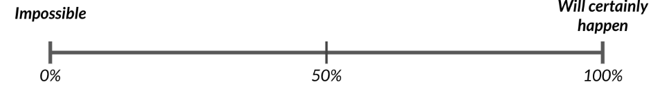
2.2 Asisgnación de Vendedores
Veamos un escenaro más complejo. Se acerca una reunión con un cliente potencial y queremos enviar a alguien del equipo de ventas a la reunión. Pondremos el nombre de cada persona en un boleto en una caja y sacaremos uno al azar para decidir quién va a reunión.
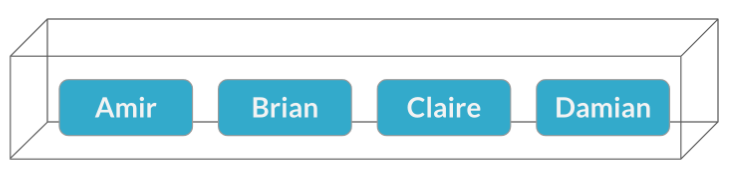
El nombre de Brian se saca.
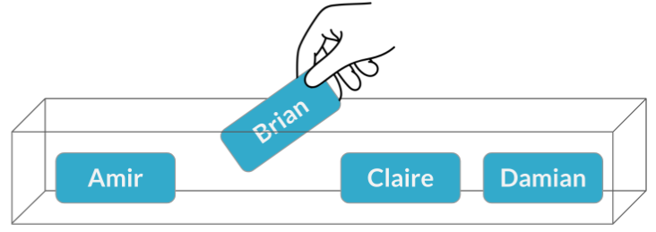
La probabilidad de que Brian sea seleccionado es una de cuatro, o 25%. Esto es
\[
P(Brian) = \frac{1}{4} = \fbox{25%}
\]
2.2.1 Muestreo desde un marco de datos
Podemos recrear este escenario en R usando la función sample_n de dplyr, que toma un marco de datos y la cantidad de filas que queremos extraer, que es solo 1 en este caso.
library(dplyr)
Attaching package: 'dplyr'
The following objects are masked from 'package:stats':
filter, lag
The following objects are masked from 'package:base':
intersect, setdiff, setequal, union
Sin embargo, si ejecutamos lo mismo nuevamente, es posible que obtengamos una fila diferente ya que sample_n elige al azar.
sales_counts %>%sample_n(1)
name n_sales
1 Amir 178
Si queremos mostrarle al aquipo cómo elegimos a Brian, esto no funcionará bien.
2.2.2 Establecer una semilla aleatoria
Para asegurarnos de obtener los mismos resultados cuando ejectuamos el script frente al equipo, configuremos la semilla aleatoria usando set.seed(). La semilla es un número que el generador de números aleatorios de R usa como punto de partida, por lo que si lo orientamos con un número semilla, generará el mismo valor aleatorio cada vez. El número en si no importa. Podríamos usar 5,139 o 3 millones. Lo único que importa es que usemos la misma semilla la próxima vez que ejecutemos el script. Ahora, nosotros, o uno de los miembros del equipo de ventas, podemos ejecutar este código una y otra vez y obtener el mismo resultado de Brian cada vez.
set.seed(5)sales_counts %>%sample_n(1)
name n_sales
1 Brian 126
2.2.3 Un segundo encuentro
Ahora hay otro cliente potencial que quiere reunirse al mismo tiempo, por lo que debemos elegir a otro vendedor. Brian ya ha sido elegido y no puede estar en dos reuniones a la vez, así que elegiremos entre las tres restantes. A esto se le llama muestro sin reemplazo, ya que no estamos reemplazando el nombre que ya sacamos. Esta vez, se elegi a Claire,
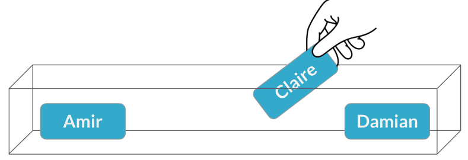
y la probabilidad de que estos suceda es una de cada tres, o al rededor del 33%. Esto es,
\[
P(Claire) = \frac{1}{3} = \fbox{33%}
\]
Para recrear esto en R, podemos pasar 2 a sample_b, lo quie nos dará filas.
set.seed(5)sales_counts %>%sample_n(2)
name n_sales
1 Brian 126
2 claire 75
Ahora digamos que las dos reuniones se realizan en diás diferentes, por lo que la misma persona podría asistir a ambas. En este escenario, debemos devolver el nombre de Brian a la caja después de elegirla. Esto se llama muestreo con reemplazo. Claire es elegida para la segunda reunión
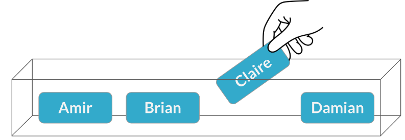
Pero esta vez, la probabilidad es del 25%.
\[
P(Claire) = \frac{1}{4} = \fbox{25%}
\]
Para hacer esto en R, establezca el argumento de reemplazo de sample_n en TRUE.
Hablemos rapidamente de la independencia. Dos eventos son independientes si la probabilidad del segundo evento no se ve afectada por el resultado del primero. Por ejemplo, si estamos muestreando con reemplazo, la probabilidad que Claire sea elegida en segundo lugar es del 25%, sin importar quien sea elegido primero. En general, al muestrear con reemplazo, cada selección es independiente.
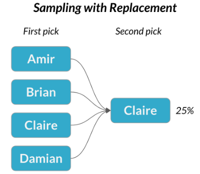
De manera similar, los eventos se consideran dependientes cuando el resultado del primero cambia la probabilidad del segundo. Si muestreamos sin reemplazo, la probabilidad de que Claire sea elegida en segundo lugar depende de quién sea elegido primero. Si Claire es elegida primero, hay 0% de probabilidad de que Claire sea elegida en segundo lugar.
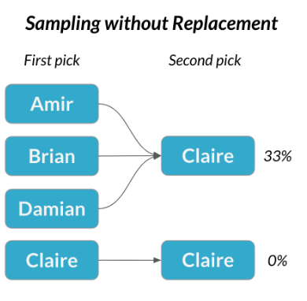
En general, cuando se muestrea sin reemplazo, cada selección es dependiente.
El siguiente cuadro comparativo contiene algunos ejemplos sobre muestreo con reemplazo y sin reemplazo.
Con Reemplazo
Sin Reemplazo
Lanzar una moneda 3 veces
De una baraja de cartas, repartiendo a 3 jugadores 7 cartas cada un.,
Tirar un dado dos veces
Seleccionar al azar 5 productos de la linea de montaje para probar el control de calidad
Elegir al azar a 3 personas para trabajar el fin de semana de un grupo de 20 personas
2.3 Ejemplo 6
Suponga que está a cargo del equipo de ventas y es hora de realizar revisiones de desempeño, comenzando con Amir. Como parte de la revisión, desea seleccionar al azar algunas de las ofertas en las que ha trabajado durante el último año para que pueda verlas más a fondo. Antes de comenzar a seleccionar ofertas, primero averiguará cuáles son las probabilidades de seleccionar ciertas ofertas.
La data que se creo a continuación, contiene la cantidad de tratos en los que Amir trabajo para cada tipo de producto.
Ahora, creamos una nueva columna llamada prob dividiendo n por el número total de tratos en los que trabajó Amir.
amir_deals %>%mutate(prob = n/sum(n))
product n prob
1 Product A 23 0.12921348
2 Product B 62 0.34831461
3 Product C 15 0.08426966
4 Product D 40 0.22471910
5 Product E 5 0.02808989
6 Product F 11 0.06179775
7 Product G 2 0.01123596
8 Product H 8 0.04494382
9 Product I 7 0.03932584
10 Product J 2 0.01123596
11 Product N 3 0.01685393
Si selecciona al azar una de las ofertas de Amir, ¿cuál es la probabilidad de que la oferta involucre el Producto C?
Respuesta: 8.43%
2.4 Distribuciones Discretas
En esta lección, profundizaremos en la probabilidad y comenzaremos a observar las distribuciones de probabilidad.
Consideremos lanzar un dado estándar de seis caras.
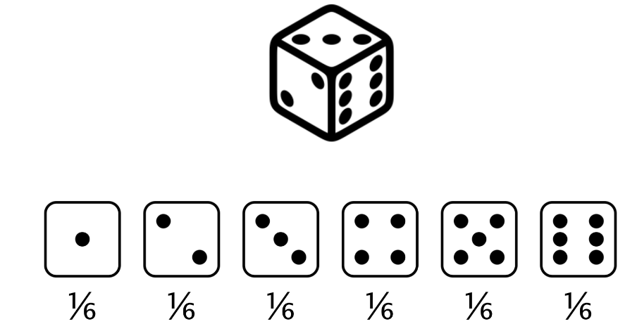
Hay seis números, o seis resultados posibles, y cada número tiene exactamente una sexta parte, o alrededor de un 17 por ciento de posibilidades de salir. Este es un ejemplo de una distribución de probabilidad.
Esto es similar al escenario anterior, excepto que teneiamos nombres en lugar de números.
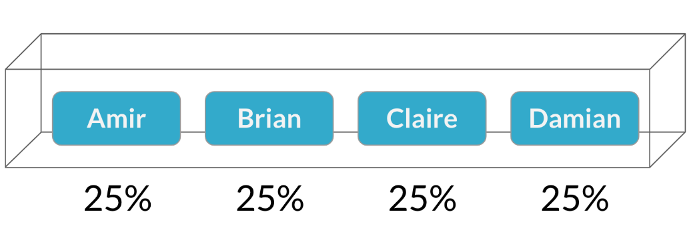
Al igual que tirar un dado, cada resultado o nombre tenía la misma probabilidad de ser elegido.
2.4.1 Distribución de Probabilidad
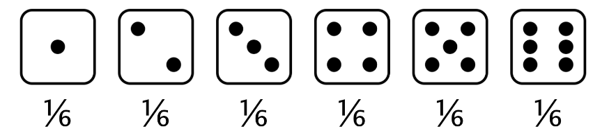
Una distribución de probabilidad describe la probabilidad de cada resultado posible en un escenario.
2.4.1.1 Valor esperado
También podemos hablar del valor esperado de una distribución, que es la media de una distribución.
Podemos calcular esto multiplicando cada valor por su probabilidad y sumando, por lo que el valor esperado de lanzar un dado justo es 3.5. En el caso de los dados sera:
Podemos visualizar esto usando un gráfico de barras, donde cada barra representa un resultado, y la altura de cada barra representa la probabilidad de ese resultado.
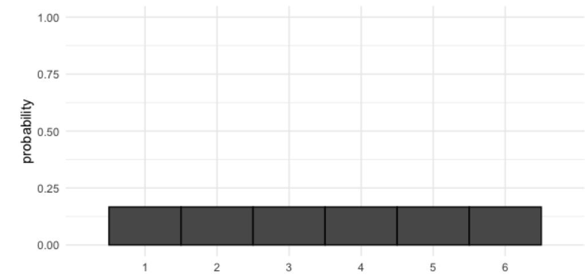
2.4.1.2 Probabilidad = área
Podemos calcular las probabilidades de diferentes resultados tomando áreas de la distribución de probabilidad. Por ejemplo, ¿cuál es la probabilidad de que nuestra tirada sea menor o igual a 2?
\[
¿P(\mbox{tirada dado}) \leq 2?
\]
Para resolver esto, tomaremos el área de cada barra que representa un resultado de 2 o menos. Cada barra tiene un ancho de 1 y una altura de 1/6, por lo que el área de cada barra es un sexto. Sumamos las áreas de 1 y 2 como se muestra en el gráfico para obtener una probabilidad total de \(1/3\).
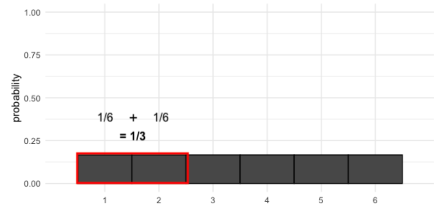
2.4.1.3 Dado desigual
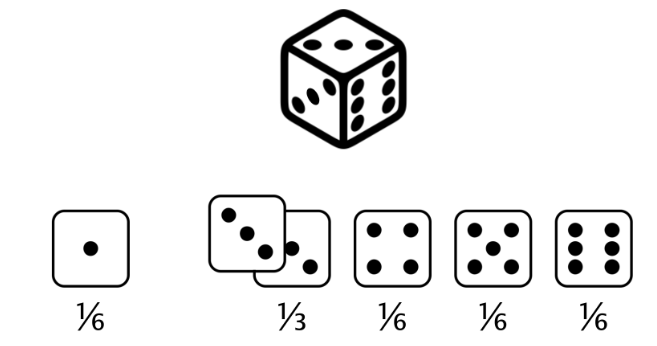
Ahora digamos que tenemos un dado donde los dos se convirtieron en tres. Esto significa que ahora tenemos un 0% de posibilidades de obtener un 2 y un 33% de posibilidad de obtener un 3. Matemáticamente esto es
ya que es imposible obtener un 2 y un 3 por su nueva probabilidad, un tercio. Esto nos da un valor esperado que es ligeramente más alto que el dado justo.
2.4.2 Visualización de Probabilidades desiguales
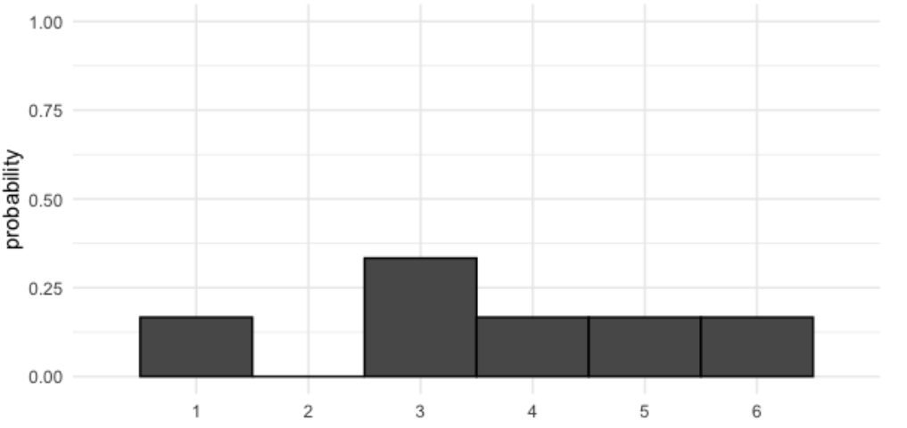
Cuando visualizamos estas nuevas probabilidades, las barras ya no son pares. Con este dado, ¿cuál es la probabilidad de obtener algo menor o igual a 2?, es decir
\[
P(dado desigual) \leq 2 = ?
\]
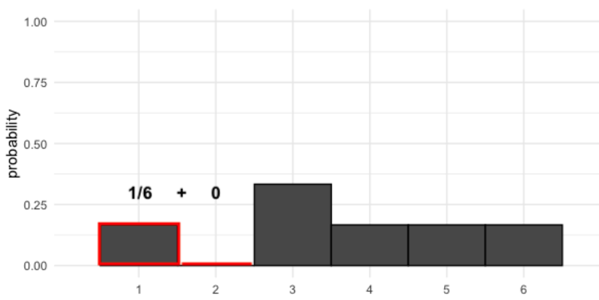
Hay un sexto de probabilidad de obtener 1 y cero probabilidad de obtener 2, que suma un sexto, tal como puede ver en la figura previa.
Las distribuciones de probabilidad que ha visto hasta ahora son discretas, ya que representan situaciones con resultados discretos. Recuerde del capítulo anterior que las variables discretas pueden considerarse como variables contables o contadas. En el caso de un dado, estamos contando puntos, por lo que no podemos sacar 1.5 o 4.3.
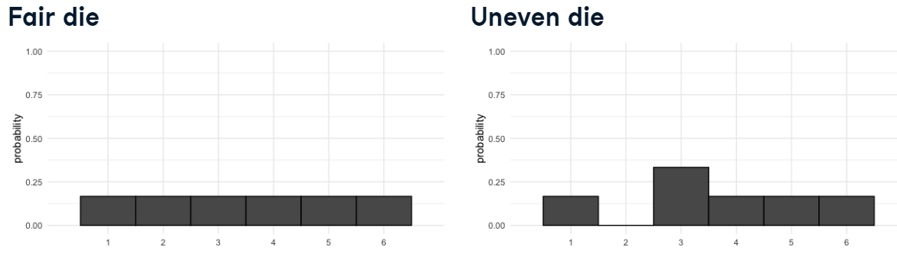
2.5 Distribución Uniforme
Cuando todos los resultados tienen la misma probabilidad, como un dado justo, se trata de una distribución especial denominada distribución uniforme discreta.
2.6 Muestreo a partir de distribuciones discretas
Al igual que tomamos muestras de nombres de una caja, podemos hacer lo mismo con distribuciones de probabilidad como las que hemos visto. Aquí hay un marco de datos llamado dado que representa un dado justo y su valor esperado es 3.5.
Tomaremos muestras de él 10 veces para simular 10 rollos. Tenga en cuenta que muestreamos con reemplazo para que estemos muestreando de la misma distribución cada vez.
Podemos visualizar los resultados de los diez lanzamientos usando un histograma, estableciendo el número de contenedores en 6 ya que hay 6 resultados posibles.
Observe que tenemos diferentes números de 1,2,3, etc., ya que la muestra fue aleatoria, aunque cada tirada teníamos la misma probabilidad de sacar cada una.
La media de nuestra muestra es de 3.3, que no esta tan cerca del 3.5 que esperabamos.
mean(rolls_10$n)
[1] 3.8
mean(dado$n)
[1] 3.5
2.7.1 Una muestra más grande
Si lanzamos el dado 100 veces, la distribución de las tiradas se ve un poco más uniforme y la media esta más cerca de 3.5
Esto se llama la ley de los grandes números, que es la idea de que a medida que aumenta el tamaño de la muestra, la media de la muestra se acercará a la ,media teórica.
2.8 Ejercicio 7
En este ejercicio vamos a crear una distribución de probabilidad.
Suponga que un nuevo restaurante abrió hace unos meses y la gerencia del restaurante quiere optimizar su espacio para sentarse en función del tamaño de los grupos que vienen con más frecuencia. En una noche, hay 10 grupos de personas esperando para sentarse en el restaurante, pero en lugar de ser llamados en el orden que llegaron, serán llamados al azar. Creemos hipoteticamente nuestra data
En este ejercicio, investigará la probabilidad de que grupos de diferentes tamaños de cada uno de los diez grupos están contenidos en el marco de datos restaurant_groups.
Primero cree un histograma de la columna group_size de restaurant_groups, estableciendo el número de contenedores en 5.
Ahora, cuente el número de cada uno de los group_size en restaurant_groups, luego agregue una columna llamada probability que contiene la probabilidad de seleccionar aleatoriamente un grupo de cada tamaño. Almacene esto en un nuevo marco de datos llamado size_distribution.
size_distribution <-restaurant_groups %>%# contamos el número de cada tamaño de grupocount(group_size) %>%# Calculamos las probabilidadesmutate(probability = n /sum(n))size_distribution
group_size n probability
1 2 6 0.6
2 3 1 0.1
3 4 2 0.2
4 6 1 0.1
Ahora, dado que ya tenemos las probabilidades, estamos listos para calcular el valor esperado de size_distribution, que representa el tamaño esperado del grupo.
Por último, calculamos la probabilidad de elegir aleatoriamente un grupo de 4 o más personas filtrando y resumiendo.
size_distribution %>%# Filtramos para grupos de 4 o mas filter(group_size >=4) %>%# Calculamos la prob_4_o_mas tomando la suma de probabilidadessummarize(prob_4_or_more =sum(probability))
prob_4_or_more
1 0.3
2.8.1 Indentificación de distribuciones
¿Qué muestra es más probable que se haya tomado de una distribución uniforme?
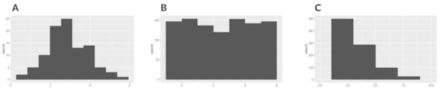
Respuesta: Opción B
2.9 Distribuciones Continuas
Podemos usar distribuciones discretas para modelar situaciones que involucran variables discretas o contables, pero ¿cómo podemos modelas variables continuas?
Comencemos con un ejemplo.
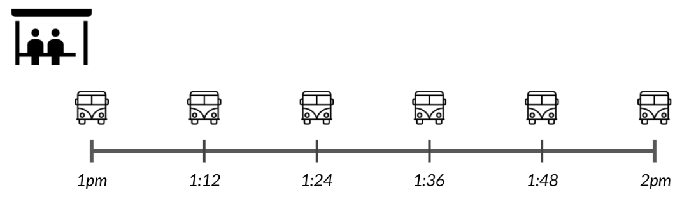
El autobús de la ciudad llega cada doce minutos, por lo que si te presentas a una hora aleatoria, que podrías esperar desde 0 minutos si llegas justo cuando llega el autobús, hasta 12 minutos si llegas cuando el autobus sale.
2.9.1 Distribución uniforme continua
Modelemos este escenario con una distribución de probabilidad. Hay una cantidad infinita de minutos que podríamos esperar, ya que podríamos esperar 1 minuto, 1.5 minutos, 1.53 minutos, etc., por lo que no podemos crear bloques individuales como la hariamos con una variable discreta.
En cambio, usaremos una línea continua para representar la probabilidad. La linea es plana ya que existe la misma probabilidad de esperar cualquier tiempo de 0 a 12 minutos. Esto se llama la distribución uniforme continua.
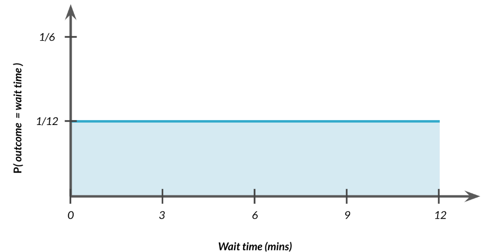
Ahora que tenemos nuestra distribución, averiguemos cual es la probabilidad de que esperemos entre 4 y 7 minutos. Al igual que con las distribuciones discretas , podemos tomar el área de 4 a 7 para calcular la probabilidad.
\[
P(4\leq \mbox{tiempo de espera} \leq 7) = ?
\]
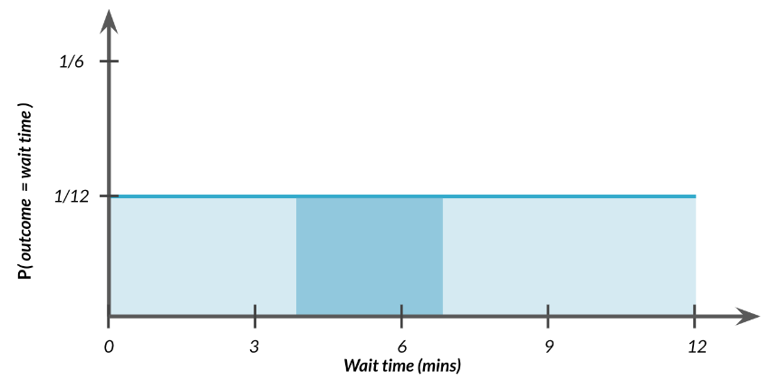
Al igual que con las distribuciones discretas, podemos tomar el área de 4 a 7 para calcular la probabilidad.
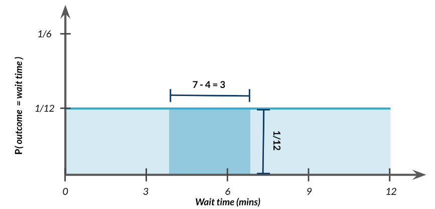
El ancho de este rectángulo es 7 menos 4 que es 3. La altura es 1/12, entonces
Usemos la distribución uniforme en R para calcular la probabilidad de esperar 7 minutos o menos. Pasaremos 7 a punif función que nos ayuda a calcular la probabilidad uniforme en R. Veamos:
punif(7, min =0, max =12)
[1] 0.5833333
Por tanto, la probabilidad de esperar menos de 7 minutos es del \(\fbox{58\%}\).
2.9.3 Cola Inferior
Si queremos la probabilidad de esperar más de 7 minutos,
\[P(\mbox{tiempo de espera} \geq 7) = ?\]establezca el argumento de cola de punto inferior en FALSO.
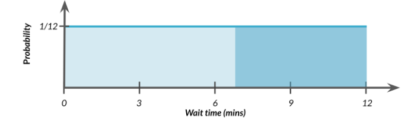
En R esto es:
punif(7, min =0, max =12, lower.tail =FALSE)
[1] 0.4166667
Pero, ¿cómo calculamos la probabilidad de esperar de 4 a 7 minutos usando R?
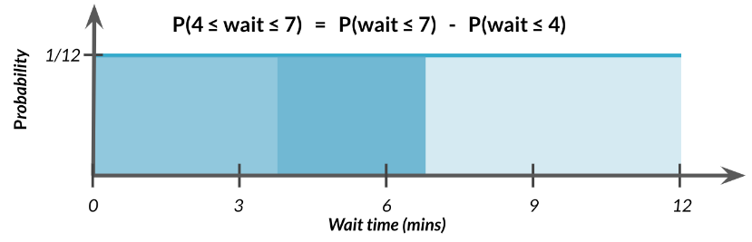
Podemos empezar con la probabilidad de esperar menos de 7 minutos, luego reste la probabilidad de esperar menos de 4 minutos, tal como puede apreciar en la figura. En R esto es:
punif(7, min =0, max =12) -punif(4, min =0, max =12)
[1] 0.25
Para calcular la probabilidad de esperar entre 0 y 12 minutos
\[
P(0\leq \mbox{tiempo de espera}\leq 12) = ?
\]
Graficamente esto es
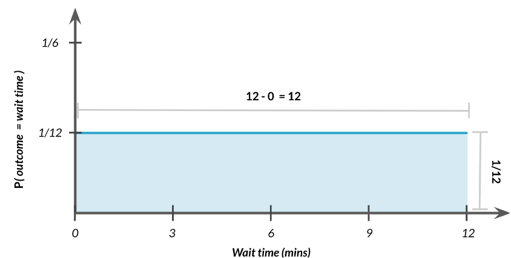
Por tanto, no es mas que multiplicar 12 por 1/2, es decir:
Esto tiene sentido ya que estamos eguros que esperaremos entre 0 y 12 minutos.
2.9.4 Otras Distribuciones Continuas
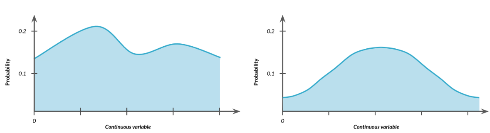
Las distribuciones continuas pueden tomar formas distintas a las uniformes donde algunos valores tienen una probabilidad mayor que otros. No importa la forma de la distribución, el área debajo de ella siempre debe de ser igual a 1.
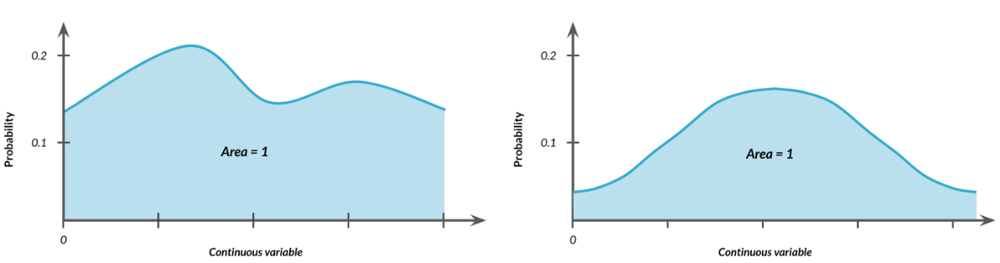
Esto también se aplicará a otras distribuciones que aprenderemos más adelante en este curso, como la distribución normal o distribución de Poisson, que se puede usar para modelar muchas situaciones de la vida real.
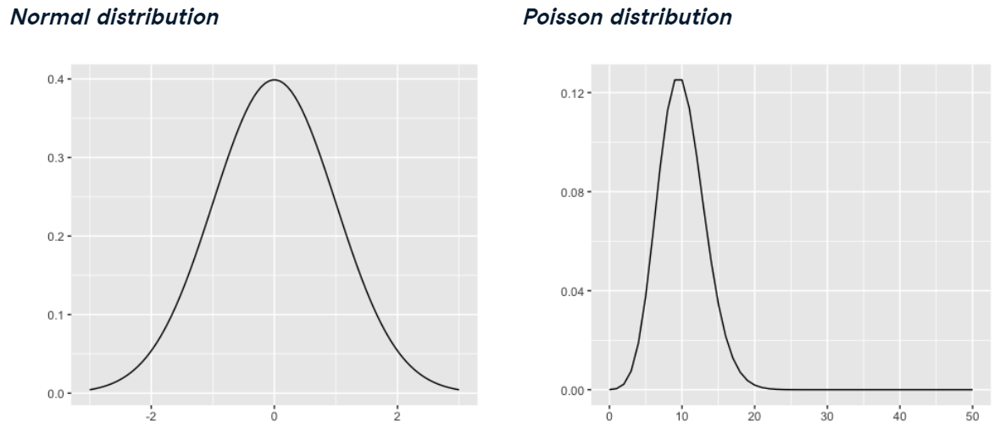
2.10 Ejercicio 8
En este punto, ha aprendido acerca de las dos variantes diferentes de la distribución uniforme: la distribución uniforme discreta y la distribución uniforme continua. en este ejercicio, decidirá qué situaciones siguen qué distribución.
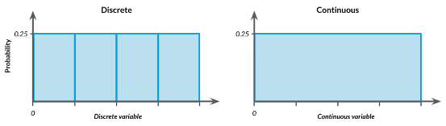
Asignaremos cada situación a la distribución de probabilidad con la que se modelaría mejor.
Uniforme discreto
Uniforme continuo
Otro
El número de boleto de un ganador de la rifa, suponiendo que haya un boleto para cada número del 1 al 100.
La hora del día en que nacerá un bebé.
La altura de una persona al azar.
El resultado de lanzar un dado de 4 caras.
El tiempo que tendrás que esperar para que un géiser entre en erupción si te presentas en un momento aleatorio, sabiendo que el géiser entra en erupción exactamente cada diez minutos.
2.11 Ejercicio 9
El software de ventas utilizado en su empresa está configurado para realizar copias de seguridad automaáicamente, pero nadie sabe exactamente a qué hora se realizan las copias de seguridad. Sin embargo, se sabe que las copias de seguridad se realizan exactamente cada 30 minutos. Amir regresa de las reuniones de ventas en momentos aleatorios para actualizar los datos del cliente con el que acaba de reunirse. Quiere saber cuánto tiempo tendrá que esperar para que realice una copia de seguridad de sus datos recién ingresados. Usando nuestro nuevo conocimiento de distribuciones uniformes continuas para modelar esta situación y responder las preguntas de Amir.
Primero, para modelar cuánto tiempo esperará Amir por una copia de seguridad utilizando una distribución uniforme continua, guarde su tiempo de espera más bajo posible como min y su tiempo de espera más alto posible como max. Recuerde que las copias de seguridad se realizan cada 30 minutos.
# Tiempos de espera mínimos y máximos para la copia de seguridad que se realiza cada 30 minutosmin <-0max <-30
Calculemos la probabilidad de que Amir tenga que esperar menos menos de 5 minutos y guárdala en una nueva variable llamada prob_less_than_5.
prob_less_than_5 <-punif(5, min = min, max = max)prob_less_than_5
[1] 0.1666667
Ahora, calculemos la probabilidad de que Amir tenga que esperar más de 5 minutos y guárdala en una variable llamada prob_greater_than_5.
prob_greater_than_5 <-punif(30, min = min, max= max)-punif(5, min = min, max = max)prob_greater_than_5
[1] 0.8333333
Por último calcule la probabilidad de que Amir tenga que esperar entre 10 y 20 minutos, y guárdala en una nueva variable llamada prob_between_10_end_20.
prob_between_10_and_20 <-punif(20, min = min, max = max) -punif(10, min = min, max = max)prob_between_10_and_20
[1] 0.3333333
2.12 Ejercicio 10
Para darle a Amir una mejor idea de cuánto tiempo tendrá que esperar, simularemos la esperá de Amir 1000 veces y creará un histograma para mostrarle lo que debe esperar. Recuerde del último ejercicio que su tiempo de espera mínimo es de 0 minutos y su tiempo de espera máximo es de 30 minutos.
Creemos un marcos de datos llamado wait_times y establezcamos un valor semilla de 334.
Ahora, generamos 1000 tiempos de espera a partir de la distribución uniforme continua que modela el tiempo de espera de Amir. Agregue esto como una nueva columna llamada time en el marco de datos wait_times.
wait_times_1000 <- wait_times %>%mutate(time =runif(1000, min =0, max =30))
Luego, creamos el histograma de los tiempos de espera simulados con 30 contenedores.
wait_times_1000 %>%mutate(time =runif(1000, min =0, max =30)) %>%ggplot(aes(time)) +geom_histogram(bins =30)
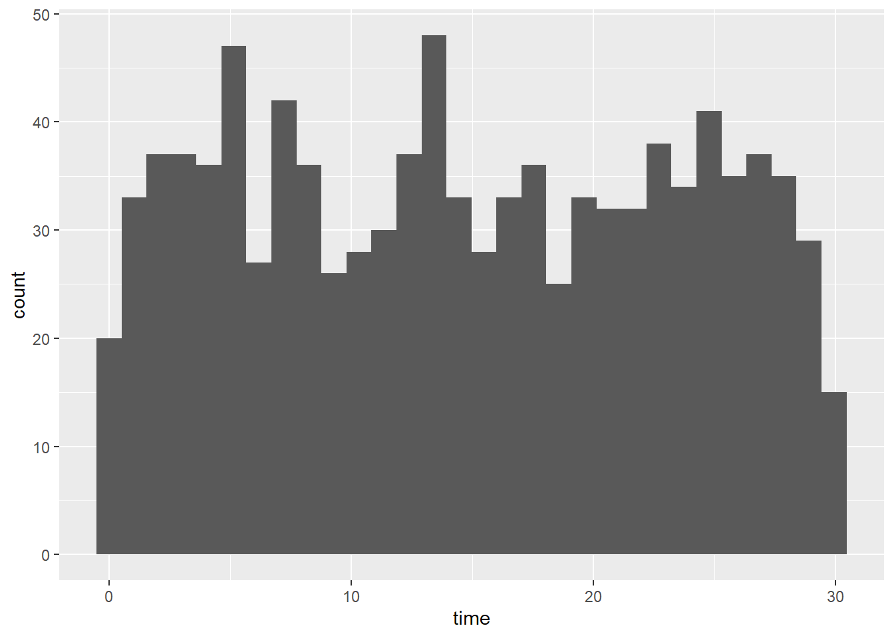
Excelente simulación! A menos que Amir descubra exactamente a qué hora ocurre cada copia de seguridad, no podrá programar la entrada de datos para que se haga una copia de seguridad antes, pero parece que esperará unos 15 minutos en promedio.
2.13 Distribución Binomial
Es hora de ampliar aún más su caja de herramientas de distribuciones. En este sección, aprenderá sobre la distribución bonomial.
2.13.1 Lanzamiento de monedas
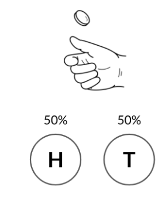
Comenzaremos lanzando una moneda, que tiene dos resultados posibles, cara o cruz, cada uno con una probabilidad del 50%.
2.13.2 Resultados Binarios
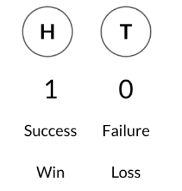
Este es un ejemplo de un resultado binario, o un resultado con dos valores prosibles. También podríamos respresentar estos resultados como un 1 y un 0, un éxito o un fracaso, y una victoria o una derrota.
En R, podemos simular esto usando la función rbinom, que toma en cuenta la cantidad de intentos o veces que queremos lanzar, la cantidad de monedas que queremos lanzar y la probabilidad de cara o éxito. Esto devolverá un 1 que contaremos como cara o un 0 que contaremos como cruz. Podemos usar
rbinom(1, 1, 0.5)
[1] 1
Para realizar ocho lanzamientos de moneda, podemos cambiar el primer argumento un 8, lo que nos dará ocho lanzamientos de una moneda con un 50% de prosibilidades de cara. Esto nos da un conjunto de 8 unos y ceros.
rbinom(8, 1, 0.5)
[1] 0 0 0 0 0 0 0 1
2.13.3 Muchas volteretas una vez
Si intercambiamos los dos primeros argumentos, simulamos un lanzamiento de 8 monedas. Esto nos da un número, que es el número total de caras o éxitos.
rbinom(1, 8, 0.5)
[1] 4
2.13.4 Muchas volteretas muchas veces
De manera similar, podemos pasar 10 y 3 a rbinom para simular 10 lanzamientos de 3 monedas. Esto devuelve 10 números, cada uno de los cuales representa el número total de caras de cada conjunto de lanzamientos.
rbinom(10, 3, 0.5)
[1] 0 0 2 2 2 1 3 1 1 1
2.13.5 Otras probabilidades
También podríamos tener una moneda que sea más pesada en un lado que en el otro, por lo que la probabilidad de obtener cara es solo del 25%.
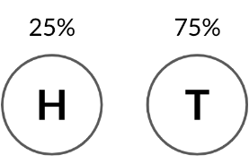
Para simular lanzamientos con esta moneda, ajustaremos el tercer argumento de rbinom a 0.25. El resultado tiene números más bajos, ya que no es tan probable obtener varias caras con la nueva moneda.
rbinom(10, 3, 0.25)
[1] 1 1 0 0 0 0 1 1 1 2
2.14 Distribución Binomial
La distribución binomial describle la probabilidad del número de éxitos en una secuencia de ensayos independientes. En otras palabras, puede decirnos la probabilidad de obtener cierto número de caras en una secuencia de lanzamientos de monedas. Tenga en cuenta que esta es una distribución discreta ya que estamos trabajando con un resultado contable. La distribución binomial se puede describir usando dos paramétros n y p.
n representa el número total de ensayos que se están realizando.
p representa la probabilidad de los ensayos
n y p son también el segundo y tercer argumento de rbinom.
Así es como se ve la distribución de 10 monedas. Tenemos la mayor probabilidad de obtener 5 caras en total, y una posibilidad mucho menor de obtener 0 caras o 10 caras.
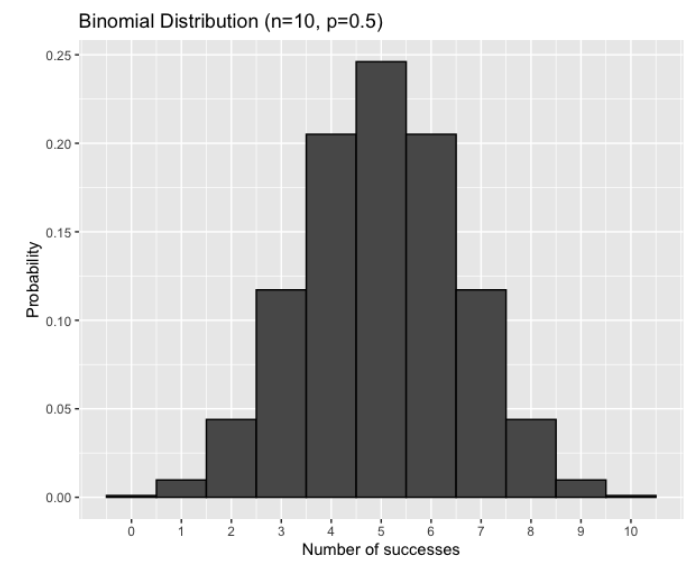
2.14.1 ¿Cuál es la probabilidad de 7 caras?
\[
P(caras = 7)?
\]
Para obtener la probabilidad de obtener 7 caras de 10 monedas, podemos usar dbinom().
El primer argumento es el número de caras o éxitos.
El segundo argumento es el número de intentos, n, y
El tercer agumento es la probabilidad de éxito p
Si lanzamos 10 monedas, hay un 12% de probabilidad de que 7 de ellas sean cara.
dbinom(7, 10, 0.5)
[1] 0.1171875
2.14.2 ¿Cuál es la probabilidad de obtener más de 7 caras?
\[
P(cara > 7)?
\]
Podemos usar el argumento de cola de punto inferior para obtener la probabilidad de un número de éxitos mayor que el primer argumento. Tenga en cuenta que esto es lo mismo que 1 menos la misma llamada pbinom
pbinom(7, 10, 0.5, lower.tail =FALSE)
[1] 0.0546875
2.14.3 Valor Esperado
El valor esperado de la distribución binomial se puede calcular multiplicando n por el p.
\[
\bar{x}= n\times p
\]
El número esperado de caras que obtendremos al lanzar 10 monedas es 10 veces 0.5 que es 5.
\[
\bar{x} = 10\times 0.5 = \fbox{5}
\]
2.14.4 Independencia
Es importante recordar que para que se aplique la distribución binomial, cada ensayo debe ser independiente, por lo que el resultado de un ensayo no debería afectar al siguiente. Por ejemplo, si elegimos al azar de estas tarjetas con ceros y unos
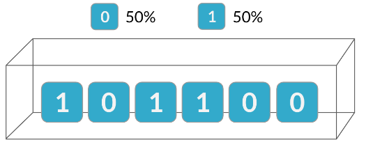
Tenemos una probabilidad de 50 - 50 de obtener un 0 un 1.
Pero como estamos muestreando sin reemplazo, las probabilidades para la segunda prueba son diferentes debido al resultado de la primera prueba.
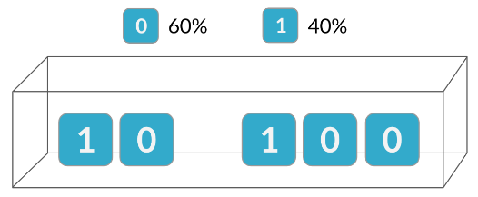
Dado que estos ensayos no son independientes, no podemos calcular probabilidades precisas para esta situación utilizando la distribución binomial.
2.14.5 Ejercicio 11
Suponga que Amir generalmente trabaja en 3 tratos por semana y, en general, gana eñ 30% de los tratos en los que trabaja. Cada trato tiene un resultado binario: se pierde o se gana, por lo que puede modelar sus tratos de ventas con una distribución binomial. En este ejercicio, ayudará a Amir a simular un año de sus transacciones para que pueda comprender mejor su desempeño.
Primero, establezca una semilla aleatoria en 10 y simule un solo trato.
set.seed(10)rbinom(1, 1, 0.3)
[1] 0
Ahora, simule una semana típica de ofertas de Amir, o una semana de 3 ofertas.
rbinom(1, 3, 0.3)
[1] 0
Por último, simule un año de ofertas de Amir, o 52 semanas de 3 ofertas cada una, y guárdelas en formato deals. Calcule el número medio de tratos que ganó por semana.
deals <-rbinom(52, 3, 0.3)mean(deals)
[1] 0.8076923
2.14.6 Ejercicio 12
Al igual que en el último ejercicio, suponga que A,mir gana el 30% de los tratos. Quiere tener una idea de la probabilidad de que cierre una cierta cantidad de tratos cada semana. En este ejercicio, calculará cuáles son las probabilidades de que cierre diferentes números de tratos utilizando la distribución binomial.
Primero, cuál es la probabilidad de que Amir cierre los 3 tratos en una semana?
# Aquí utilizamos la función de dbinom() puesto que queremos sacar una sola probabilidad de masa, es decir 3 tratos en una semana dbinom(3, 3, 0.3)
[1] 0.027
Esto nos dice que de 3 ensayos que hacemos queremos ver las probabilidad de que esto ocurra el 100% de las veces, es decir, 3, teniendo en cuenta que la probabilidad de exito es del 30%.
¿cuál es la probabilidad de que Amir cierre 1 trato o menos en una semana?
# # sin embargo, en este caso, queremos sacar más probabilidades que en el caso anterior, es decir, antes solamente calculabamos la probabilidad de saldar 3 tratos en 1 semana, es decir una solo caso. pbinom(1, 3, 0.3)
[1] 0.784
Dicho de otra manera, queremos saber cual es la probabilidad de que el éxito, ocurra una vez en 3, teniendo en cuenta que la probabilidad es del 30%.
¿Cuál es la probabilidad de que Amir cierre más de 1 trato?
pbinom(1, 3, 0.3, lower.tail =FALSE)
[1] 0.216
Lo que estamos viendo en este caso, es ver cual es la probabilidad de tener por lo menos, 1 éxito, o más 2 o incluso 3, de tres ensayos.
2.14.7 Ejercicio 13
Ahora amir quiere saber cuántos tratos puede esperar cerrar cada semana si cambia su tasa de ganancias. Afortunadamente, puede usar su conocimiento de distribución binomial para ayudarlo a calcular el valor esperado en diferentes situaciones.
Primero, calcule el número esperado de ventas de las 3 en las que trabaja que Amir ganará cada semana si mantiene su tasa de ganancia del 30%.
won_30pct <-3*0.3won_30pct
[1] 0.9
Segundo, calcule el número esperado de ventas de las 3 en las que trabaja que ganará si su tasa de ganancias cae al 25%.
won_25pct <-3*0.25won_25pct
[1] 0.75
Tercero, calcule la cantidad esperada de ventas de las 3 en las que trabaja que ganará si su tasa de ganancias aumenta al 35%.